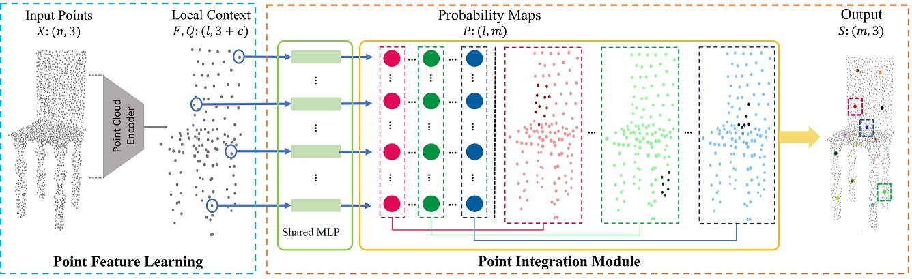

Unsupervised Learning of Intrinsic Structural Representation Points
Nenglun Chen1 Lingjie Liu2 Zhiming Cui1 Runnan Chen1 Duygu Ceylan3 Changhe Tu4 Wenping Wang1
1The University of Hong Kong 2Max Planck Institute for Informatics 3Adobe Research 4Shandong University
CVPR 2020
Abstract
Learning structures of 3D shapes is a fundamental problem in the field of computer graphics and geometry processing. We present a simple yet interpretable unsupervised method for learning a new structural representation in the form of 3D structure points. The 3D structure points produced by our method encode the shape structure intrinsically and exhibit semantic consistency across all the shape instances with similar structures. This is a challenging goal that has not fully been achieved by other methods. Specifically, our method takes a 3D point cloud as input and encodes it as a set of local features. The local features are then passed through a novel point integration module to produce a set of 3D structure points. The chamfer distance is used as reconstruction loss to ensure the structure points lie close to the input point cloud. Extensive experiments have shown that our method outperforms the state-of-the-art on the semantic shape correspondence task and achieves comparable performance with the state-of-the-art on the segmentation label transfer task. Moreover, the PCA based shape embedding built upon consistent structure points demonstrates good performance in preserving the shape structures.
|
|
|
| Paper | Code |
Overview
Given a point cloud, PointNet++ is first used to extract the local contextual features F and their corresponding points Q. Then, the features F and the sample points Q are further passed through the point integration module to produce the structure points S.
Video
Acknowledgement
We thank the reviewers for the suggestions, Changjian Li, Guodong Wei, Yumeng Liu for the valuable discussions.

{kind=link}